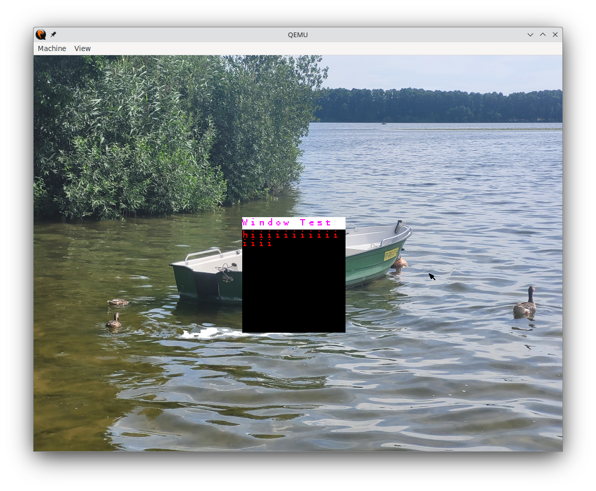

My personal graphical operating system project

Graphical shell
Goals
Boot
- Custom bootloader - GitBoot
- Loading kernel from ATA drive
- BIOS memory mapping routine
- Set VBE to 1024x768x32
- Load kernel.elf from partition
Kernel
- Interrupt Descriptor Table and handlers
Drivers
- Disk driver with streaming support
- Graphics driver with text mode and VBE support
- Serial port communication
Formats
- Support for the ELF executable format
Filesystem
- File operations and management routines
- FAT16 filesystem support (w/o writing)
- Pipe-based filesystem support
- Path parsing functionality
Memory Management
- Dynamic memory allocation
Task Management
- Process management functionality
- Task switching mechanisms
- Recovering from task crashes
- Process arguments and environment passing
Syscalls
- Dynamic memory allocation
Userland
- Developed blank application
- Graphical shell functionality
- C/C++ application support
- Basic printing to kernel stdio
- Debugging userland applications
(Automated) documentation for this project can be found Here
Using:
- GCC/G++
- NASM
- qemu-system-i686
- CMake
- CLion with DevContainer
- Doxygen for documentation
 1.16.1
1.16.1